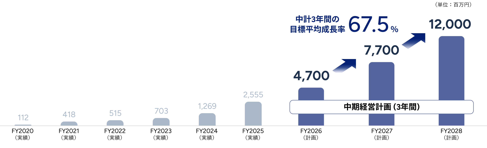

IR情報
売上高・利益目標
2028年8月期に売上高 120億円、営業利益 32億円、当期純利益 20億円の到達を目指します



中期経営計画3か年の成長戦略
不動産テックを起点とした、CREソリューションの高い『質』と『成長性』を通じたビジネス展開の加速により
CREプラットフォーマーとしての地位を確立していきます
CREソリューションビジネス
ネットワーク拡大を通じたCREプラットフォーマーとしての事業成長を進めます
～上場による信用力向上と資金調達力を活かし、投資機会を逸することなく次の成長フェーズへ～
-
-
事業・エリアに強みを持つ事業会社/金融機関との戦略的なアライアンスを加速
各サービスの
さらなる強化
-
-
CREアドバイザリー
-
-
CREファンド組成
-
-
プロジェクトマネジメント
-
-
B/Sを活用した投資・賃貸
-
-
不動産仲介
-
-
マスターリース
-
-
中堅・中小企業の経営環境を背景とした事業承継ニーズの加速
-
-
不動産M&A案件への厳選投資
不動産テックビジネス
不動産テックシステムの機能強化と利用拡大


不動産テックビジネスとCREソリューションビジネスが有機的に連携するという⽅針は、これまでと変わりません。
- ・不動産テックビジネスについては、今後はM&Aを軸に、不動産テック関連企業とのアライアンスを⽬指します。
- ・CREソリューションビジネスでは規模を拡⼤する上で、 3つのポイントを重視しします。
このような取り組みを掛け合わせることで、投資機会を逃さず、次の成⻑フェーズに進むことを⽬指します。
1.戦略的アライアンス
事業領域および重点エリアに強みを持つ事業会社・金融機関との戦略的アライアンスを推進していきます

2.各サービスの更なる強化
不動産テックを起点とするCREソリューションビジネスの展開は不変
各サービスの強化・推進してまいります
CREファンド組成
CREマーケットにおいて増加する投資機会を継続的に捕捉
各サービスの概要は以下のとおりです
B/S活用投資・賃貸
資産の売却意向を有する企業に対し、当社の取得による資産流動化の実現を提供する、取得資産の⼊居企業への賃貸サービス
プロジェクトマネジメント
資産の保有意向を有する企業に対し、CREの有効活⽤に関する提案・実施、テナント誘致・建物プラン策定・ゼネコン選定などのコンサルティング
CREアドバイザリー
CREの有効活⽤に関するソリューションの提案・助⾔、CRE営業戦略の助⾔、CREの取得⽀援などのコンサルティング
不動産仲介
マッチングシステム（CCReB CREMa）を利⽤した不動産売買・賃貸の仲介サービス
マスターリース
物件を一括借上げすることで安定収益を確保しつつ、稼働率改善や運営最適化を推進するサービス
CREファンド組成
資産の売却意向を有する企業に対し、SPC等を活⽤したファンドによる資産流動化の実現、ファンドの組成、運⽤、償還などのマネジメントサービス
3.CREｘM&A
不動産M&A案件、不動産テック企業M&Aを通じて、インオーガニックな成長実現を目指します
CREソシューションビジネスでは、産業用不動産の資産価値を引き出すことを目的に、企業価値20億円規模の中堅・中小企業を中心にCREの潜在価値を見極め、CREアドバイザリーおよびB/S活用投資を組み合わせることで価値最大化させるようなM&Aを目指します。
不動産テックビジネスでは、不動産テック関連企業とのM&A・資本提携を推進し、プロダクト間シナジーの創出やエンジニア確保を通じて技術基盤を強化、アライアンス先の販路活用によるユーザー拡大や、地銀向けサービスに強みを持つパートナーとの連携により、不動産テックビジネスの拡大を加速させるM&Aを目指します。